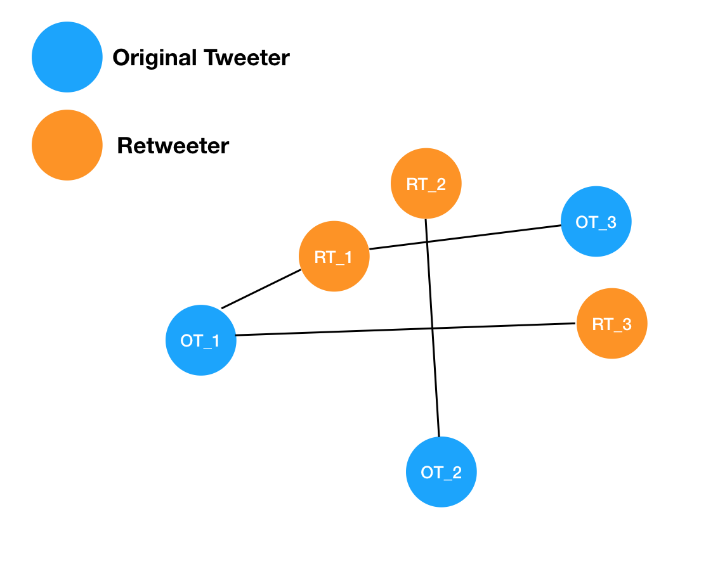
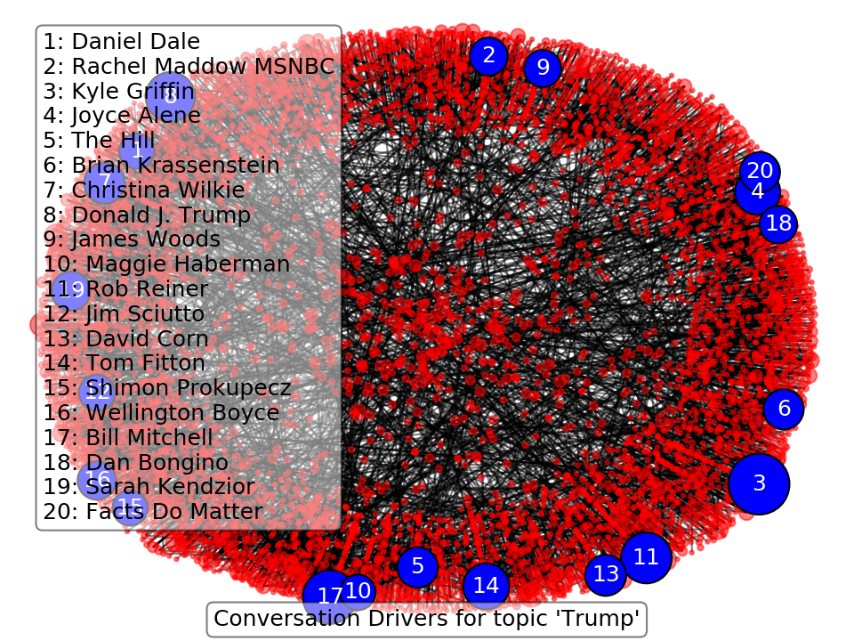

Who's Driving the Twitter Discussion? - Social Network Analysis
Sep 4, 2018 - PythonTwitter is a weird platform. Just, in general. The average Jill gets just as much volume as a world renowned expert. This is seen often in political discussions, and it becomes hard to tell who is driving conversations versus who is just reacting to the conversations that are happening. On top of this weirdness, there's also the inherent weirdness of the "retweet." It's essentially a way for someone to agree with a thought without having to explicitly do anything but click a button.
With that in mind, I started thinking about ways to programmatically extract who is generating most of the thoughts that are permeating discussion on a given topic. I landed on doing some graph/network analysis, very similar to a "social media network" analysis. However, I want to focus on "who retweeted whom" and whether there are any "big players" that lead the discussions that see a lot of retweeting.
Getting some retweets
The main idea behind a network analysis is that we want to put every known quantity onto a piece of paper then draw lines that link up all the quantities that know about each other. Then we can do our analysis to determine connections between people, how important people are in the discussion groups, etc. So first we need to get our data and build a network.To get the data, I built a twitter streamer (here) that uses the pre-built Twitter API and loads every new tweet as it is posted. To help focus the analysis, I only kept tweets that had the words "trump" or "Trump" in them because like him or hate him, people are talking about him on Twitter. So we're going to be asking the question, "who is driving discussion about Trump on Twitter?" I then threw out all the "trumpy" tweets that weren't retweets, since I'm interested in finding who is driving the discussion via commonly retweeted items. Finally, I extracted just the user names and stored them in a file for later analysis. So when I was done, I had a file that looked like this:
original_tweeter_name1, retweeter_name1
original_tweeter_name2, retweeter_name2
original_tweeter_name1, retweeter_name3
original_tweeter_name3, retweeter_name1
... We can see that each original tweeter or retweeter gets their own location on the map as a node. We can then connect each node to all the other nodes it has interacted with via an edge, which are shown as lines in this diagram. The type of analysis we want to do is to figure out who among the users are acting like hubs of information for the twitter discussions. In this case, we can see that OT_2 is sort of a hub, in the sense they put out an original thought that had a retweet. However, they aren't really driving the conversation as much as OT_1. That's because OT_1 is more "central" to the graph in the sense that more edges and nodes center around it. In this case, RT_1 and RT_3 both "center" around OT_1. So we want to write code that can construct our graph, and find these most central nodes.
To do this, I used a python module called
networkx. This allows us to add nodes and edges
programmatically, building up a huge network of tweeters and retweeters. Then I asked the network to identify
high centrality nodes via their degrees of connectivity. In the following plot, I've ID'd the top 20
important nodes given a little over 5000 retweets collected in 10 minutes or so on September 1. The size of
each node is drawn to correlate to how important that node is (larger = more important).
In the plot's text box, you can see the user name for each of the important hubs of information (where importance means their opinion is being largely retweeted). I do not follow much political media, so when I first saw these names, I was quite confused about whether they were important. However, these people are all political journalists, actors, fact checking sites, politically motivated groups with large twitter followings, or Trump himself. This method has been able to identify people who often tweet about Trump, and also have a presence on Twitter capable of making their words carry out into the "masses." As an example, I had no idea who Daniel Dale was, but he is a journalist for the Toronto Star that covers the US President and has 380k followers. So his voice is on topic, and has a great scalability due to his large number of followers.
I've applied this tool to the topic "Trump", but if used in combination with the twitter streamer, it can be applied to any topic you wish. The streamer and analysis tools are available on my GitHub here: Network Analysis Tool. In particular, you'll need to use the Streamer by modifying the last line of the code to stream around a topic you're interested in and the Hub Finder to find the top users that are acting as information hubs.
I'll have a follow up post to this next week focusing on finding communities inside of a network, and how that can be used to find people that are sharing similar "discussions" on twitter - which will allow us to identify the "echo chamber" effect that many politics experts are decrying as a bad sign for democracy.